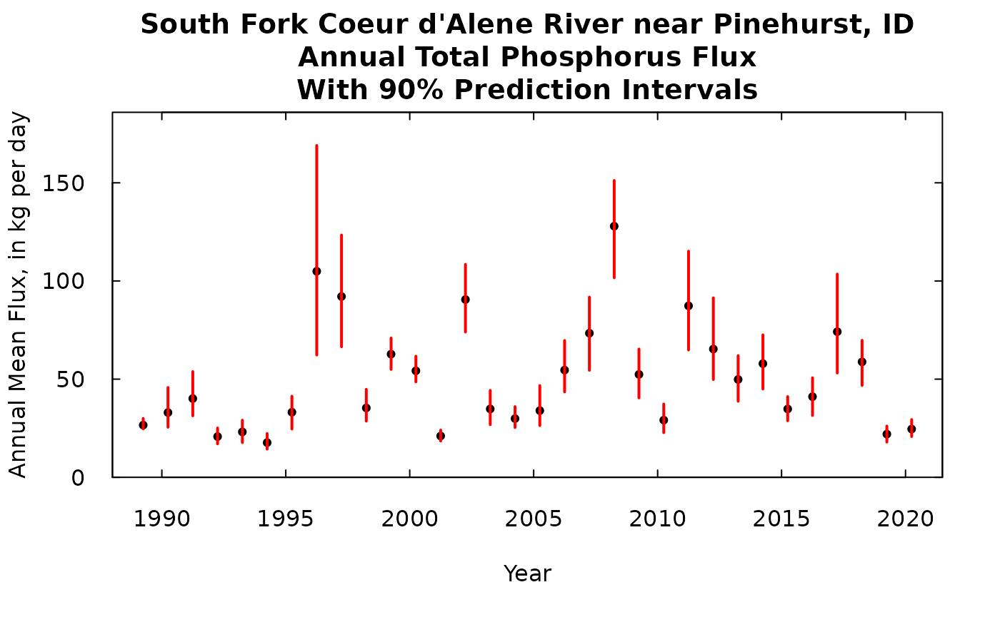
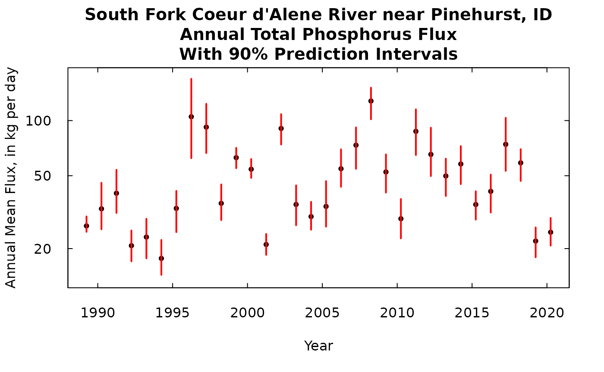
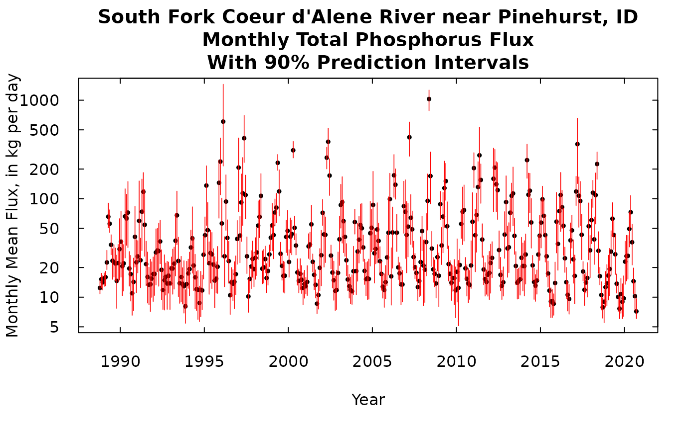
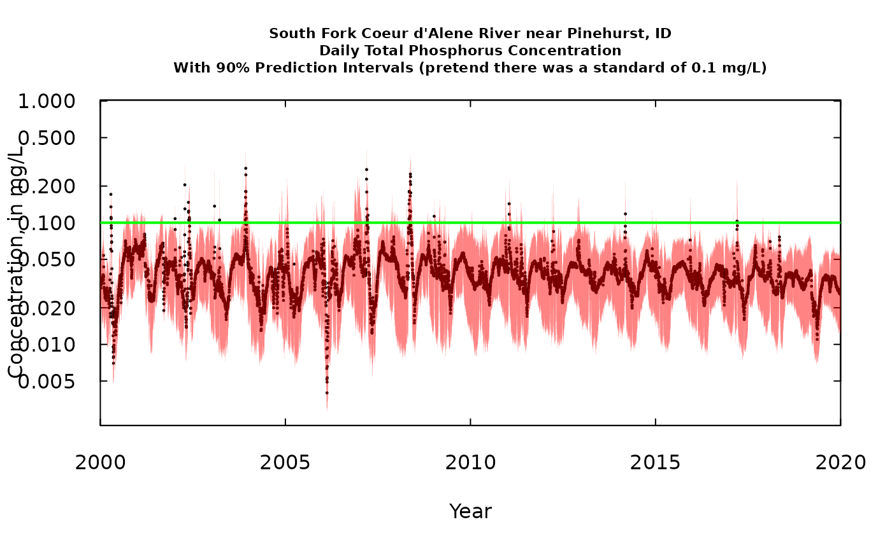
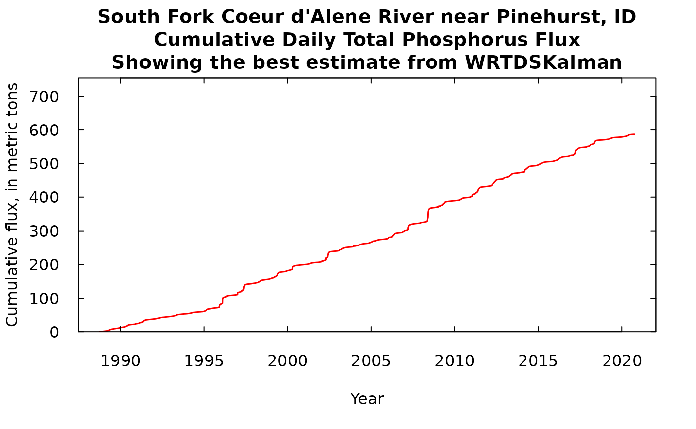

Graphics for Prediction Intervals
Robert M. Hirsch
3/22/2021
Source:vignettes/prediction.Rmd
prediction.RmdIntroduction
This script provides a set of examples of how to use WRTDS_Kalman outputs to characterize the uncertainty in an estimated record of concentration or flux (mostly we will deal with flux here). The workflow that takes place before this point consists of the following steps.
eList is created and WRTDS model is estimated. Note here that it is irrelevant whether we use Stationary Flow Normalization or Generalized Flow Normalization. The simplest thing to do is estimate the model with
modelEstimation. If the wall feature is desired, then this step should be done withrunSeries.The WRTDS_Kalman estimates need to be computed. This is done with the command:
library(EGRET)
library(EGRETci)
eListK <- readRDS("Pinehurst_eListK.rds")
eListK <- WRTDSKalman(eList)- Then we want to create a large number of bootstrap replicates of the daily record of concentration and flux. We do that with the command like this:
dailyBootOut <- genDailyBoot(eListK,
nBoot = 25, nKalman = 20, rho = 0.9)- nBoot is the number of bootstrap replicates that is run, each one is used to estimate the WRTDS model (we can think of this as the estimation error)
- nKalman is the number of individual traces of concentration (and flux) that is generated from each of these WRTDS models (we can think of this as the stochastic variability of the process)
- rho is the autoregressive lag one day correlation coefficient that we assume (default is 0.9)
- Now we are ready to look at uncertainty at time scale of Annual, Monthly, and Daily. We will also look at the uncertainty of the cumulative flux record.
Setting up the data and running the Annual Prediction Intervals
We start by creating the very large matrix called dailyBootOut. Each row of this matrix is a day in our record. There must be a perfect match between the rows of eList$Daily and the rows of dailyBootOut. The various calculations we will do here need to get their date information and their discharge information from eList$Daily. Each column of this matrix is an individual replicate of the time series of flux values. In the case we are running here, where nBoot = 25 and nKalman = 20, the number of columns is 25*20 = 500.
In this case where we are looking for annual values the process will be to aggregate each of these daily records into annual records and then look at the distribution of flux values for each year of the record. This distribution for each year, will provide us with the prediction interval, for that year.
Throughout this example we will do everything based on 90% prediction intervals. That means that we are estimating that there is a 0.05 probability that the true value lies above the interval, and a 0.05 probability that the true value lies below the interval, and a 0.9 probability that the true value lies within the interval. If we wanted to go for a higher prediction interval, say a 95% prediction interval or a 98% prediction interval we would need to greatly increase the number of replicates run, which would greatly increase the computational and storage burden.
Notice that we need to use the eListK data frame to find our WRTDSKalman estimate for each time step. This will give us the expected value of flux. We could, in place of the expected value, use the median from the 500 replicates.
# this next line is what you would run if you needed to create dailyBootOut
# dailyBootOut <- genDailyBoot(eList, nBoot = 25, nKalman = 20, rho = 0.9)
annPct <- makeAnnualPI(dailyBootOut, eListK)
yMax <- 1.1 * max(annPct$flux$p95)
nYears <- length(annPct$flux$p95)
AnnualResults <- setupYears(eListK$Daily)
kFlux <- data.frame(AnnualResults$DecYear,AnnualResults$GenFlux)
title <- "South Fork Coeur d'Alene River near Pinehurst, ID\nAnnual Total Phosphorus Flux\nWith 90% Prediction Intervals"
plot(kFlux[,1], kFlux[,2],ylim = c(0,yMax), yaxs = "i",main = title, xlab = "Year",
ylab = "Annual Mean Flux, in kg per day", pch = 19, cex = 0.7, las = 1, tck = 0.02)
axis(3, labels = FALSE, tck = 0.02)
axis(4, labels = FALSE, tck = 0.02)
for(i in 1: nYears){
lines(rep(annPct$flux$DecYear[i], 2), c(annPct$flux$p5[i], annPct$flux$p95[i]),
col = "red", lwd = 2)
}
So the black dot is our best estimate of the flux for that year. The red bar is our 90% prediction interval.
A note about units throughout this discussion. We are always presenting flux here as an average rate kg/day. We could have presented them as a total flux for the year, in which case the quantities could have all been multiplied by 365.25 and the label on the y-axis changed to “Annual Flux, in kg”. Or we could multiply each flux value by (365.25/1000) and change the label to “Annual Flux, in metric tons”.
Note that the prediction intervals are narrow in the low flux years and very wide in the high flux years, but the relationship between the mean value and the width of the interval isn’t a simple relationship because a lot depends on how well the samples collected around that year characterize the whole relationship between concentration and time, discharge, and season.
We could, if we wanted to, show this same result on a log scale.
yMax <- 1.15 * max(annPct$flux$p95)
yMin <- 0.85 * min(annPct$flux$p5)
ylim <- c(yMin, yMax)
nYears <- length(annPct$flux$p95)
AnnualResults <- setupYears(eListK$Daily)
kFlux <- data.frame(AnnualResults$DecYear,AnnualResults$GenFlux)
title <- "South Fork Coeur d'Alene River near Pinehurst, ID\nAnnual Total Phosphorus Flux\nWith 90% Prediction Intervals"
plot(kFlux[,1], kFlux[,2],ylim = ylim, yaxs = "i",main = title, xlab = "Year",
ylab = "Annual Mean Flux, in kg per day", pch = 19, cex = 0.7, las = 1, tck = 0.02, log = "y")
axis(3, labels = FALSE, tck = 0.02)
axis(4, labels = FALSE, tck = 0.02)
for(i in 1: nYears){
lines(rep(annPct$flux$DecYear[i], 2), c(annPct$flux$p5[i], annPct$flux$p95[i]),
col = "red", lwd = 2)
}
Monthly prediction intervals
The process is very similar except that we will only show the output here on a log scale graphic (there are such large differences between the largest flux months and the smallest flux months). Here again, these are flux rates (in kg/day), the output could be changed to a total mass for each month, by multiplying each of these values by the number of days in that month.
MonthlyResults <- calculateMonthlyResults(eListK)
kFluxMonth <- data.frame(MonthlyResults$DecYear,MonthlyResults$GenFlux)
nMonths <- length(MonthlyResults$DecYear)
monthPct <- makeMonthPI(dailyBootOut, eListK)
yMaxMonth <- 1.15 * max(monthPct$flux$p95)
yMinMonth <- 0.85 * min(monthPct$flux$p5)
title <- "South Fork Coeur d'Alene River near Pinehurst, ID\nMonthly Total Phosphorus Flux\nWith 90% Prediction Intervals"
plot(kFluxMonth[,1], kFluxMonth[,2],ylim = c(yMinMonth,yMaxMonth), yaxs = "i",main = title, xlab = "Year", las = 1, tck = 0.02,
ylab = "Monthly Mean Flux, in kg per day", pch = 19, cex = 0.5, log = "y")
axis(3, labels = FALSE, tck = 0.02)
axis(4, labels = FALSE, tck = 0.02)
for(i in 1: nMonths){
lines(rep(MonthlyResults$DecYear[i], 2), c(monthPct$flux$p5[i], monthPct$flux$p95[i]),
col = "red", lwd = 0.8)
}
Daily prediction intervals
The process here is similar, except here we don’t have to aggregate up to months or year. The number of days is so large that showing a single graph of the prediction intervals for each day is just too crowded to show. What we are showing here is just a time slice of less than one year. This the choice of time periods to show is just manipulated by changing the xlim argument in the plot command.
kFluxDay <- data.frame(eListK$Daily$DecYear, eListK$Daily$GenFlux)
nDays <- length(eListK$Daily$DecYear)
dayPct <- makeDailyPI(dailyBootOut, eListK)
yMaxDay <- 1.15 * max(dayPct$flux$p95)
yMinDay <- 0.85 * min(dayPct$flux$p5)
xlim <- c(1996, 1996.6)
title <- "South Fork Coeur d'Alene River near Pinehurst, ID\nDaily Total Phosphorus Flux\nWith 90% Prediction Intervals"
plot(kFluxDay[,1], kFluxDay[,2],ylim = c(yMinDay,yMaxDay), xlim = xlim, yaxs = "i",main = title, xlab = "Year",
ylab = "Daily Flux, in kg per day", pch = 19, cex = 0.5, log = "y", las = 1, tck = 0.02)
axis(3, labels = FALSE, tck = 0.02)
axis(4, labels = FALSE, tck = 0.02)
for(i in 1: nDays){
lines(rep(kFluxDay[i,1], 2), c(dayPct$flux$p5[i], dayPct$flux$p95[i]),
col = "red", lwd = 1)
}A feature of this plot that is worth noting is that the prediction intervals narrow at certain points. Those are dates when one or more samples have been collected. For example, there is a day just 3 days from the end of the period shown when there the prediction interval has a width of zero. That is the sampled day 1996-08-13. About a month before that 1996-07-15 (which appears around 1996.54) we see the prediction interval being very narrow but it hasn’t shrunk to zero width and that because this sample value was reported as <0.01 mg/L, so even though we have a sample that day there is still some uncertainty. Of course, these days with prediction intervals of zero width demonstrate an oversimplification in the method we are using here. The sample value of concentration multiplied by the discharge for that day is not a perfect estimate of flux. There is, no doubt, some within day variation in concentration and there is also some random error in the sample collection and sample analysis in the laboratory. One could make this analysis more complex and add these other features to it but we view this oversimplification as being a reasonable way to proceed. It does help one see when estimates are likely to be fairly poor versus when they are likely to be fairly good.
We can look at another time slice of the same length at a more recent time. Note that the scales on this plot is the same as the scale on the previous plot.
xlim <- c(2017, 2017.6)
title <- "South Fork Coeur d'Alene River near Pinehurst, ID\nDaily Total Phosphorus Flux\nWith 90% Prediction Intervals"
plot(kFluxDay[,1], kFluxDay[,2],ylim = c(yMinDay,yMaxDay), xlim = xlim, yaxs = "i",main = title, xlab = "Year",
ylab = "Daily Flux, in kg per day", pch = 19, cex = 0.5, log = "y", las = 1, tck = 0.02)
axis(3, labels = FALSE, tck = 0.02)
axis(4, labels = FALSE, tck = 0.02)
for(i in 1: nDays){
lines(rep(kFluxDay[i,1], 2), c(dayPct$flux$p5[i], dayPct$flux$p95[i]),
col = "red", lwd = 1)
}Looking at the daily record from a concentration perspective
Up to this point we have just been looking at flux, and generally that is where WRTDSKalman will likely be most useful, but there can be insights that it can provide about frequencies at which concentration might exceed some kind of water quality standard (either an aquatic life standard, a recreational water standard, or a drinking water source standard). I’ll use the same data set and just pretend there is a standard we want to use as a benchmark, at 0.1 mg/L. In the simplest terms we want to get an idea if there are some long term changes in how frequently concentration might be exceeding the benchmark. The graphics shown here should be thought of as indicative of changing conditions but should not be viewed as a rigorous quantitative result. I believe there are some ways to go about such analyses but that’s beyond the scope of these discussions. For an example of a case where WRTDS was used to try to quantify trends in frequency of exceedances see (Corsi et al., 2015)[https://doi.org/10.1016/j.scitotenv.2014.12.012]. The method used in that paper has not yet been turned into portable R code and subjected to testing, but it probably could be by an able graduate student.
xlim <- c(2000,2020)
kConcDay <- data.frame(eListK$Daily$DecYear, eListK$Daily$GenConc)
yMaxDay <- 1.15 * max(dayPct$conc$p95)
yMinDay <- 0.85 * min(dayPct$conc$p5)
title <- "South Fork Coeur d'Alene River near Pinehurst, ID\nDaily Total Phosphorus Concentration\nWith 90% Prediction Intervals (pretend there was a standard of 0.1 mg/L)"
plot(kConcDay[,1], kConcDay[,2],ylim = c(yMinDay,yMaxDay), xlim = xlim, yaxs = "i",main = title, xlab = "Year",
ylab = "Concentration, in mg/L", pch = 19, cex = 0.2, log = "y", xaxs = "i", las = 1, cex.main = 0.7, tck = 0.02)
axis(3, labels = FALSE, tck = 0.02)
axis(4, labels = FALSE, tck = 0.02)
for(i in 1: nDays){
lines(rep(kConcDay[i,1], 2), c(dayPct$conc$p5[i], dayPct$conc$p95[i]),
col = "red", lwd = 0.05)
}
abline(h = 0.1, col = "green", lwd = 2)
From this graph lets pose a question. Let’s define something we’ll call a “potentially problematic day” (PPD) as being a day when we think that the probability that the day exceeded the standard of 0.1 mg/L is greater than 0.05. Visually, a PPD is any day when the red vertical line sticks up above the 0.1 mg/L standard. I think we can say that the frequency of PPDs has been decreasing over time. Good news! The wording and the strict probabalistic meaning is imperfect at this point, but I think the concept is worth developing.
Cumulative loading
When we are dealing with the subject of inputs and/or outputs of some material to (or from) a reservoir, lake, or even a river reach (including its riparian zone) it is useful to think about the cumulative fluxes. That is, we want to add up all the fluxes day by day and see the cumulative amounts grow over time. What we often see when we do this is a clear indication that for constituents like TP which mostly move through the system at times of very high discharge, we see a cumulative curve that is gently sloping upwards, punctuated by a series of vertical steps representing the brief periods of very high discharge.
What we will show here is first, our best estimate of the cumulative flux which we derive from the WRTDSKalman estimate (with no consideration of uncertainty). Then we can add to that a number of equally likely traces of cumulative flux, using some of the many replicates that we have stored in dailyBootOut. There were 500 of these equally likely traces in dailyBootOut (each trace is a column of the matrix) and that would look like just a mass of ink on the screen, so to make it more understandable we will plot every tenth trace (trace 1, trace 11, trace 21, …trace 491).
nIter <- length(dailyBootOut[1,])
nDays <- length(dailyBootOut[,1])
dailyBootSum <- dailyBootOut
title <- "South Fork Coeur d'Alene River near Pinehurst, ID\nCumulative Daily Total Phosphorus Flux\nShowing the best estimate from WRTDSKalman"
cumulative <- cumsum(eListK$Daily$GenFlux)
nLines <- nIter / 10
for(j in 1: nIter){
dailyBootSum[,j] <- cumsum(dailyBootOut[,j])
}
yMax <- 1.1 * max(dailyBootSum[nDays,])
# first we will look at the WRTDSKalman estimate alone
# we divide all the values by 1000 to get to metric tons
plot(eListK$Daily$DecYear, cumulative/1000,
ylim = c(0, yMax/1000), yaxs = "i",
main = title,
ylab = "Cumulative flux, in metric tons",
xlab = "Year",type = "l", lwd = 1.5, las = 1, tck = 0.02, col = "red")
axis(3, labels = FALSE, tck = 0.02)
axis(4, labels = FALSE, tck = 0.02)
# now showing the random iterations
title <- "South Fork Coeur d'Alene River near Pinehurst, ID\nCumulative Daily Total Phosphorus Flux\nonly showing one tenth of the iterations"
plot(eListK$Daily$DecYear, dailyBootSum[,1]/1000,
ylim = c(0, yMax/1000), yaxs = "i", main = title,
ylab = "Cumulative flux, in metric tons",
xlab = "Year",type = "l", lwd = 0.5, las = 1, tck = 0.02)
axis(3, labels = FALSE, tck = 0.02)
axis(4, labels = FALSE, tck = 0.02)
for(k in 2: nLines) {
j <- k * 10
points(eListK$Daily$DecYear, dailyBootSum[,j]/1000,
type = "l", lwd = 0.5)
}What we see in either of these is that we have long periods of fairly gradual increase in the cumulative flux, punctuated by some very abrupt increases during high flow events such as happened in 1996. If we look at the one with 50 iterations we can see that these traces stay pretty close together and over the roughly 30 years to total range of the cumulative flux runs from about 550 metric tons to about 640 metric tons of phosphorus passing this monitoring site. The next phase of analysis (which won’t be covered in this document) would involve doing the exact same kind of analysis at the next monitoring site downstream, creating 500 possible iterations of that record. Then, if we wanted to examine the record of gains and losses of TP in the reach between the two sites, we could randomly pair up iterations from the upstream site with iterations from the downstream site, and take the difference of the two cumulative records. Then we could look at that cumulative record of differences and see a distribution of gains and/or losses in the reach. But, that’s for another day.
Prediction intervals on the cumulative flux
What we are going to do here is look at prediction intervals on the cumulative flux curve for every day of the record. We are actually going to create three lines. One in black that represents the median of the distribution for that day. That means that our model tells us that there is a 50% chance that the true cumulative flux on that day falls above the black line (and 50% chance that it falls below the black line). Then in red will be the 5% and 95% limits. That means there is a 5% chance that the true cumulative flux lies below the lower red line and a 5% chance that the true cumulative flux lies above the upper red line, and of course, a 90% chance that the true cumulative flux lies between the two red lines on any given day. Note that we are making inferences about where the true value is on any given day. This graph does not tell us anything about the probability that the true trace will fall entirely inside the red lines. The probability that the true cumulative flux (which we don’t actually know) would sometime fall outside of the two red curves is almost certainly a good deal larger than 10%, but we have no way of knowing what that might be.
nIter <- length(dailyBootOut[1,])
nDays <- length(dailyBootOut[,1])
dailyLow <- rep(NA,nDays)
dailyMid <- rep(NA,nDays)
dailyHigh <- rep(NA,nDays)
title <- "South Fork Coeur d'Alene River near Pinehurst, ID\nCumulative Daily Total Phosphorus Flux\n90% Prediction Intervals"
for(i in 1: nDays) {
v <- quantile(dailyBootSum[i,], probs = c(0.05, 0.5, 0.95), type = 6)
dailyLow[i] <- v[1]
dailyMid[i] <- v[2]
dailyHigh[i] <- v[3]
}
plot(eListK$Daily$DecYear, dailyMid/1000, ylim = c(0, yMax/1000), yaxs = "i", main = title,
ylab = "Cumulative flux in metric tons", xlab = "Year", type = "l", lwd = 1, col = "black",
las = 1, tck = 0.02)
axis(3, labels = FALSE, tck = 0.02)
axis(4, labels = FALSE, tck = 0.02)
points(eListK$Daily$DecYear, dailyLow/1000, type = "l", lwd = 1, col = "red")
points(eListK$Daily$DecYear, dailyHigh/1000, type = "l", lwd = 1, col = "red")Conclusion
All of these figures give some ideas of how one might utilize the
results that can come out of the genBootDaily function
(WRTDSKalman bootstrapping process). Of course and of these examples
could be used to produce tabular output rather than graphical. The
process for doing so should be pretty clear from following the code.
None of these kinds of analyses or graphics are currently in any publications. Major testing of the accuracy of these results is currently underway and showing very promising results. Verification of these kind of results is not easy, because it isn’t just a matter of saying how close did we get to the truth, but rather the question is, over many applications of these methods how frequently was the truth really outside the 90% prediction interval (and a host of similar questions, evaluated at many time scales over many data sets). Having said that, I think these methods are ready for people to put them to use in quantifying the uncertainty of concentration and flux estimates.